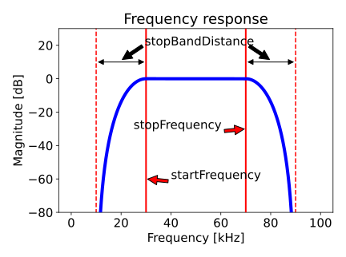

This module splits the frequency band of each broadband data channel into narrower frequency bands and saves each of them as a single frequency channel.
Two different methods for computing sv for the split bands are available: Bandpass filtering and gliding FFT window.
This module requires a configuration file containing frequency bands to be converted to single frequency data, specified by their nominal frequency, their start frequency, and their stop frequency.
The broadband notch filters configuration file is optional, and only used with the Gliding FFT window method.
The splitting of the original frequency band is performed by bandpass filtering the pulse compressed signal and computing sv at the centre frequency of this passband. Angles are also computed on these bandpass filtered data.
It is worth noting that the width of the sub-bands can affect the spatial resolution of the output. Narrower bands can result in worse resolution.
Furthermore, the width of the bands is limited by the inverse of the pulse length. In order to yield meaningful results, the bandwidth of the generated frequency bands should not be below this number. E.g. for a pulse length of 2 milliseconds, the minimal bandwidth is 500 Hz.
The bandpass filter is represented by the following transfer function based on the Hann function:
The figure below shows the frequency response of a bandpass filter with a start frequency of 30 kHz, stop frequency of 70 kHz, and stop band distance of 20 kHz.

This method uses a gliding FFT window for computing sv in the split bands:
Because this method is computationally demanding, it might be advisable to use downsampling.
Angles are computed the same way as for the bandpass filtering method.